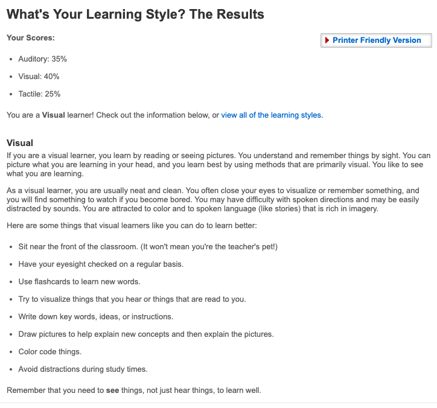
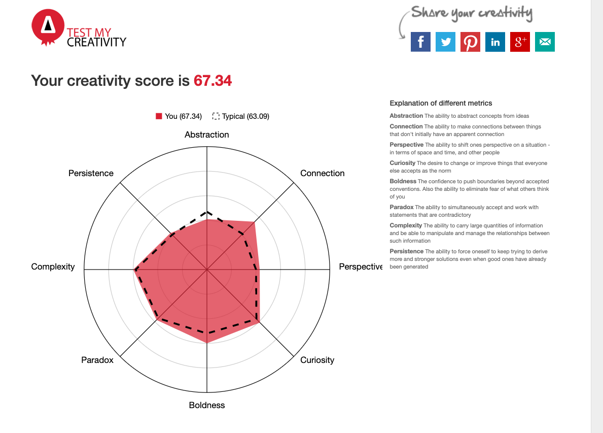

I grew up on Sydney’s North Shore and spent my whole schooling life within the North Shore as well. I am pretty much as Australian as you can get but my name gives a good indication of what my families extended background is. My first name is Scottish and comes from my Mother’s side, my last name is Russian and is from my Father’s. I tried learning Russian once but it is very difficult! I will get there one day but for now I am just doing Duolingo to learn a few phrases here and there.
One of my favourite passions is photography (although I did not take the above). I am more interested in landscape and nature photography, I think there is always a good angle to find. My favourite location I have been to is without a doubt Japan, it is such a photogenic place! I can then spend hours and hours editing the photos, however I very rarely share them! Lately I have been posting more on my social media accounts and it is nice to get some positive feedback. The only problem with photography is the costs. There is always a newer and shinier camera or lens to buy.
My interests in IT began at a young age where I saw my brother build his first PC. He ended up shorting out the whole house, but that’s a story for another time. As most little brothers know, anything your big brother does you have to do to. I was still quite young so it took a year or two, but along with my brother and my father I built my first PC. Since then I have always had a keen interest in the world of IT. I have been gaming most of my life and consider PC gaming above all else (#PCMasterRace).
I never thought that I would make IT my profession however and out of High School I went to uni to study secondary education, majoring in ancient history and english. I unfortunately did not last long as I realised I didn’t want to spend the rest of my life inside a classroom. I went around a couple of casual jobs before I took up a position at a business to business telco in a level 1 support role. I worked in that role for 18 months until I went into a more senior role as Incident Coordinator, which I am currently still in. The role is more with organising different resolver groups to fix more complicated faults and manage customer expectations.
I wish to change career path in a more technical direction, which is why I have chosen to study IT through RMIT. RMIT to me is a name synonymous with IT education in Australia and was a no brainer when picking from the other options to study IT through OUA. I hope during the earlier part of the degree I am able to find a technical path that I wish to pursue and then narrow down and hone my skills and knowledge in that field. I can’t wait!
View Job Listing
In the most simplest of terms, a Customer Solutions Architect takes a client’s desires and needs for their network and makes it into a reality. They are depended upon by all facets of a business for their technical expertise and ability to make customers happy and make money for a business. I like the role as it involves problem solving and vast technical knowledge. It also requires some customer service which I am already competent at, without it being necessary for success in the role.
CSAs have to have a proven knowledge of network architecture and current products. They must have certificates to show this ability such as CCNA (switching and networking) and CCNP, along with other vendor certificates that aren’t CISCO based, such as Juniper. You will need some years of professional experience in a Similar role as there is a lot expected of you from various stakeholders in the business. I currently do not have any of the certificates, although before I started my current role I was studying for my CCNA, however work was too busy at the time to continue. I think the first step will be to complete the CCNA, then move on to more technical CISCO certs. At the same time I would also like to complete certs from AWS, Google and Microsoft for their cloud products. In the long run I would like to be a CSA specialising in cloud.


The first test does not surprise me as I am quite an introverted person. I am also someone that likes to observe and look into all the facts before I make any decisions or take any actions. I have always found that I learn best when I have visual cues like video or text to read. I am a careful reader even when I read for fun. I prefer to learn as much as I can about something before I get my hands on it. I am glad that I am above the average for my creativity as well, but I have to admit I thought that it would be higher.
Within a team I am usually the more quiet one and my input it usually more thought out and with meaning. I try to figure out the answer before I say what I have to say. I would respond better to video and readings on a subject matter as well in order to garner more information. I find that I am creative when it comes to problem solving (I basically do this for a living). I feel like I would be good at thinking through problems and finding a solution that works, even if it is not the most straight forward and obvious.
The first test does not surprise me as I am quite an introverted person. I am also someone that likes to observe and look into all the facts before I make any decisions or take any actions. I have always found that I learn best when I have visual cues like video or text to read. I am a careful reader even when I read for fun. I prefer to learn as much as I can about something before I get my hands on it. I am glad that I am above the average for my creativity as well, but I have to admit I thought that it would be higher.
For my project, I want to create an app that is for all lovers of coffee. The app will allow the end user to great a personal profile and then make suggestions for coffee based off their preferred tastes. It will also be able to learn the users trends and be able to adapt to changing tastes. The app will take the guess work out of finding the next best bean, instead it will suggest a variety of beans that lie within your taste range. It will also implement a ranking scheme for coffee shops for the coffees that make themselves, but will also store a database of coffee beans those shops sell.
I don’t know about you but I am pretty useless in the morning before I have my coffee. However, there are few things worse than looking forward to a cup and then being let down by sub par taste or quality. A study by data analytics company Mccrindle stated that 75% of all Australians have at least one cup of coffee a day and one in four say they cannot survive a day without a cup of coffee. I believe that this demographic is underserved by the IT industry and they need our help! By utilising mobile and cloud based technologies, I believe we can achieve this goal.
The end user will be able to create their own personalised profile. This will begin with the normal personal information (name, email, phone number optional for security). For safety reasons you will only be asked to provide your postcode, this will keep the user’s exact address safe while also allowing the geographical based features to work as intended. This profile will change overtime based off the user’s coffee consumption of a particular variety and also user entered ratings. You will then be asked to answer a quick 5 question survey to get a base data set for the coffee suggestions.
The app encodes the base data set the user inputs during the profile creation page and assign special values to your profile. These values will then be cross referenced with an existing cloud hosted database of coffee varieties. Initially the system will choose the best three varieties that match your data set and output them to the end user. Based of your location, it will then tell you where you can find it locally in a coffee shop or coffee supplier. Alternatively it will provide a link to an online coffee distributer who can ship the coffee to you directly (this will require full address obviously). The suggestion will also provide a guide on which baristas in your areas are using the variety in their coffees. The app will then use machine learning to gain a better more specialised understanding of the end users coffee preferences which will reflect in the coffees that are suggested.
The app will also incorporate a a social media aspect that will allow users to share their experiences. Whenever a user checks in to a cafe or picks up some beans they can upload a post to the app that will be shared on their social network newsfeed. This will also be linked to other social media platforms for easier sharing and better visibility for the app (marketing). With more users joining the social media experience will grow as the average rating for cafes and coffee varieties have a larger data set to base it on. Users will also be able to add other users as “friends” so their immediate friends get their updates more directly. Users will also be able to add varieties that they have found that might not be in the already existing database. This way the app will be growing by itself as its users explores new coffee varieties on their own. The social media platform will be very important to the growth of the app both functionally and commercially as it will assist with the user base growing.
The app will be mostly mobile based, so the end user will need a mobile phone or tablet to get the most out of the experience. The app will also have a web based version so it can be accessed via a web browser using your username and password. The app will also need to have hosted servers for the database and social media platform.
The app will utilised the Google Cloud products do to its integration with the Google AI and Machine learning products. The app will be written to run on both iOS and Android. The website will be written in HTML and will connect through to google cloud to integrate with the mobile apps.
There will be various requirements to understand different programming languages for the different platforms the app will be available on. For iOS the app will be developed using Swift, for Android it will use Java. As mentioned previously the web browser based application will be written in HTML. There will also be a need to have a basic knowledge of cloud infrastructure and the products that are offered by Google. The end product will be designed to be as simple and straight forward to use for the end user as possible. The idea is that anyone with a smartphone would have the knowledge to get the app working as intended.
The original problem that was identified was that coffee drinkers and enthusiast were underserved by the modern day world of mobile applications. This app is the way to resolve this. The app is designed to not only bring a more specialised coffee experience for the end user, it is also a platform to boost the economy for coffee suppliers and producers, and also the local coffee shops. The app will also open the coffee world to a specialised social network, so that the experiences of other coffee drinkers can be shared and celebrated. The app will have a large impact on the individual user, but also the macro impact it will have will be immense.